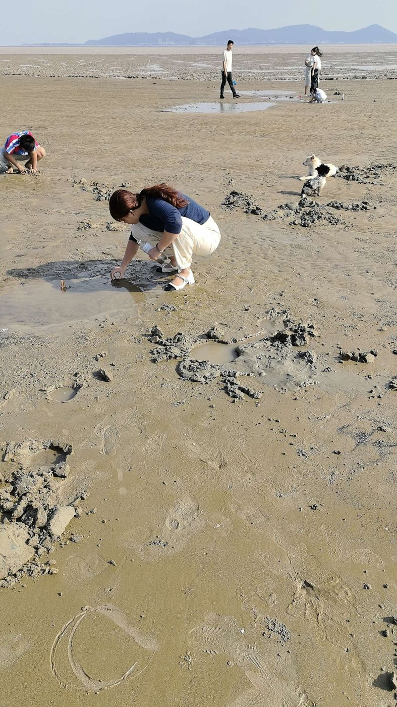
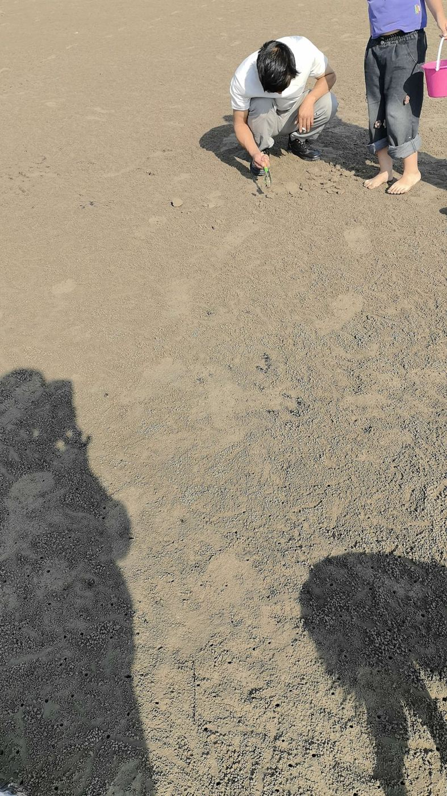

福州赶海攻略：琅岐岛退潮后的海滩

琅岐岛龙鼓度假村的金鸡报晓海滩，退潮以后最好玩。石头缝、小水洼里会冒出小螃蟹、小螺，孩子能玩一下午。

几个提醒
- 出发前查潮汐：天气 App 搜「琅岐 潮汐」，退潮前后两小时最合适。哪天是大潮可以看琅岐今日日落和潮汛。
- 穿防滑的鞋，礁石很滑。
- 防晒、帽子、一套换洗衣服都带上。
- 小的放生，垃圾带走。
赶完海别急着走
退潮后的沙滩又平又软，捡根树枝写个名字、画颗爱心，等浪慢慢漫上来，拍照特别好看。
有福海墅就在海滩边，出门几分钟就到。没带小桶小铲也没关系，可以借，也能现买。玩累了回去冲个澡，上天台吹吹风。
这页的赶海照片是住客拍的。